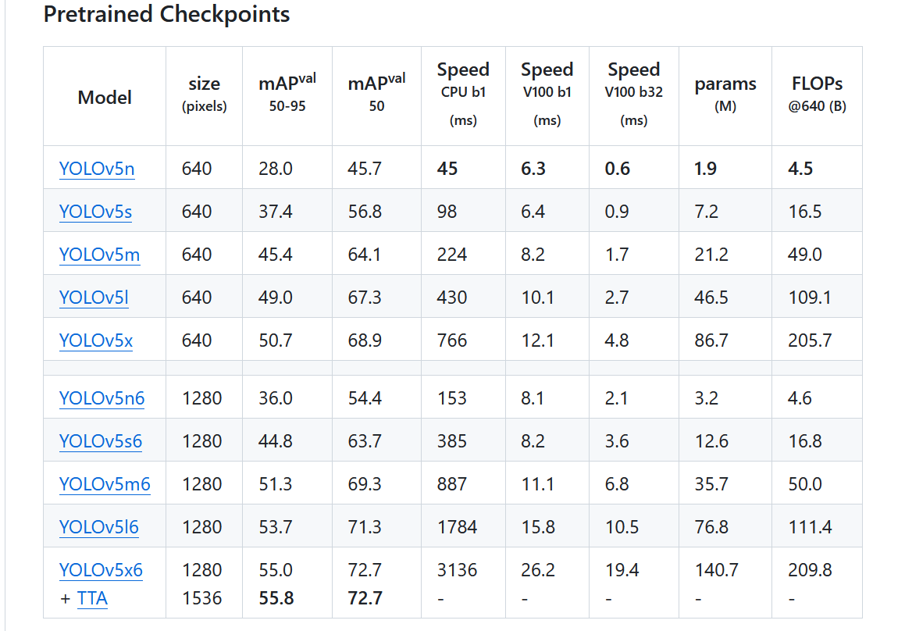
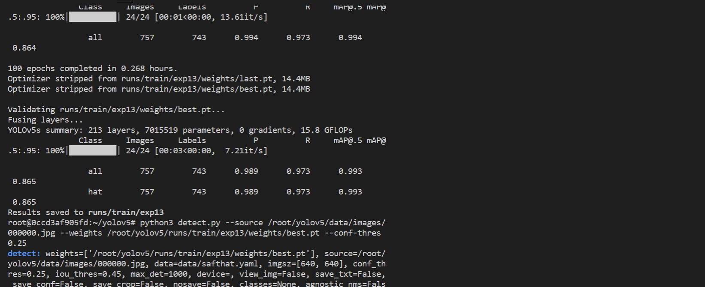
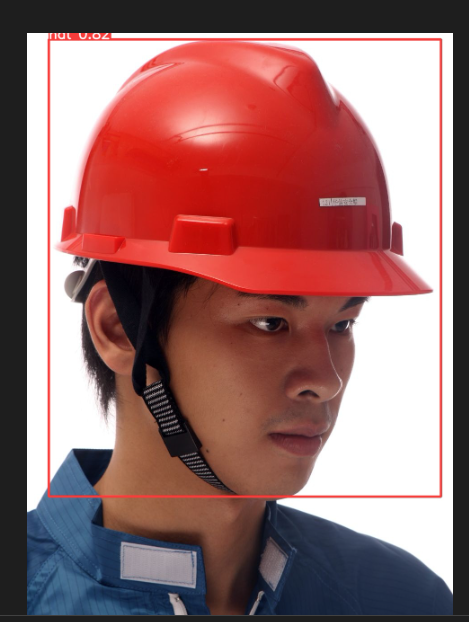
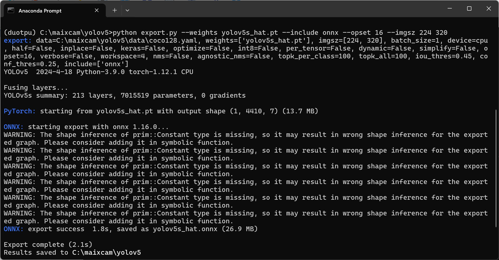
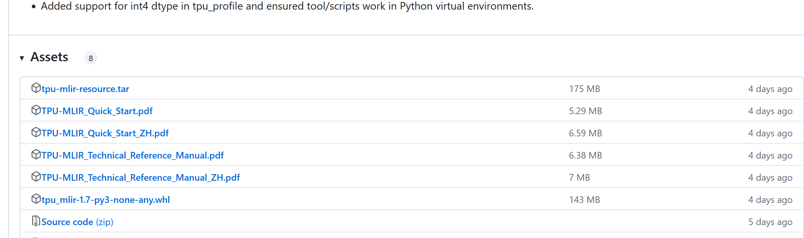
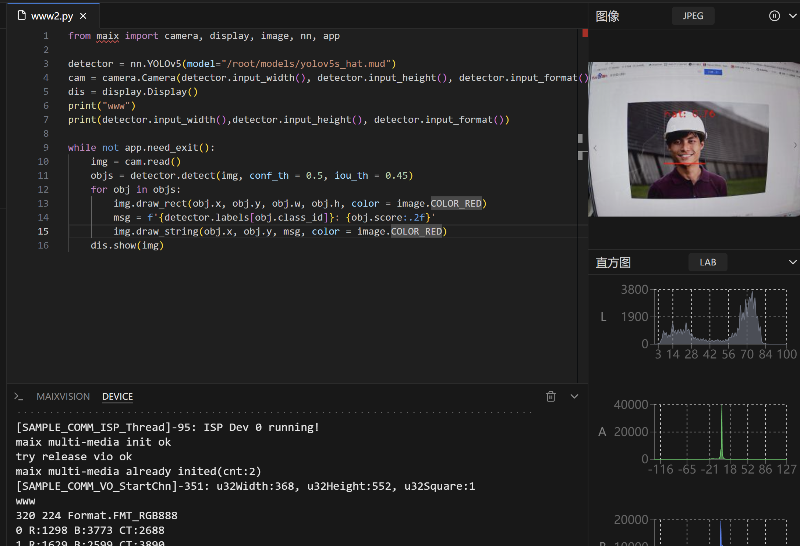

English
EnglishMaixPy Custom (Offline Training) AI Model and Running
Update history
| Date | Version | Author | Update content |
|---|---|---|---|
| 2024-4-23 | v1.0 | dragonforward | Added YOLOv5s deployment |
This post is contributed by the community user dragonforward
This blog will show you how to deploy your own YOLOv5s model (the author demonstrates a hard hat model) step by step from scratch. The training part refers to the author's previous work, and those who have already trained their models can skip this part, although there are some differences.
Obtain Custom-Trained YOLOv5s ONNX Model
Prepare Custom Dataset (The author uses the VOC dataset)
Dataset Directory Structureis as follows:
└─VOC2028: Custom dataset
├─Annotations Stores the dataset label files in XML format
├─ImageSets Dataset split files
│ └─Main
├─JPEGImages Stores the dataset images
Split the Dataset
Execute python3 split_train_val.py in the split_train_val.py file path, and you will get the following directory structure:
└─VOC2028: Custom dataset
├─Annotations Stores the dataset label files in XML format
├─ImageSets Dataset split files
│ └─Main test.txt
└─test.txt
└─train.txt
└─val.txt
├─JPEGImages Stores the dataset images
├─split_train_val.py Python file for splitting the dataset
split_train_val.py file code:
# -*- coding: utf-8 -*-
"""
Author: dragonforward
Description: Split into training, validation, and test sets in the ratio of 8:1:1, 8 for training, 1 for validation, and 1 for testing.
"""
import os
import random
import argparse
parser = argparse.ArgumentParser()
# Address of the XML files, modify according to your data. XML files are usually stored in Annotations
parser.add_argument('--xml_path', default='Annotations/', type=str, help='input xml label path')
# Dataset split, choose the address under your data's ImageSets/Main
parser.add_argument('--txt_path', default='ImageSets/Main/', type=str, help='output txt label path')
opt = parser.parse_args()
train_percent = 0.8 # Proportion of the training set
val_percent = 0.1 # Proportion of the validation set
test_persent = 0.1 # Proportion of the test set
xmlfilepath = opt.xml_path
txtsavepath = opt.txt_path
total_xml = os.listdir(xmlfilepath)
if not os.path.exists(txtsavepath):
os.makedirs(txtsavepath)
num = len(total_xml)
list = list(range(num))
t_train = int(num * train_percent)
t_val = int(num * val_percent)
train = random.sample(list, t_train)
num1 = len(train)
for i in range(num1):
list.remove(train[i])
val_test = [i for i in list if not i in train]
val = random.sample(val_test, t_val)
num2 = len(val)
for i in range(num2):
list.remove(val[i])
file_train = open(txtsavepath + '/train.txt', 'w')
file_val = open(txtsavepath + '/val.txt', 'w')
file_test = open(txtsavepath + '/test.txt', 'w')
for i in train:
name = total_xml[i][:-4] + '\n'
file_train.write(name)
for i in val:
name = total_xml[i][:-4] + '\n'
file_val.write(name)
for i in list:
name = total_xml[i][:-4] + '\n'
file_test.write(name)
file_train.close()
file_val.close()
file_test.close()
Convert VOC to labels to obtain label files
Directory structure:
└─VOC2028: Custom dataset
├─Annotations Stores the dataset label files in XML format
├─ImageSets Dataset split files
│ └─Main
├─JPEGImages Stores the dataset images
└─labels YOLOv5 treats this folder as the training annotation folder
└─voc_label.py
the voc_label.py file code:
# -*- coding: utf-8 -*-
import xml.etree.ElementTree as ET
import os
sets = ['train', 'val', 'test'] # If your Main folder doesn't have test.txt, remove 'test'
classes = ["hat", "people"] # Change to your own classes, VOC dataset has the following 20 classes
# classes = ["brickwork", "coil","rebar"] # Change to your own classes, VOC dataset has the following 20 classes
# classes = ["aeroplane", 'bicycle', 'bird', 'boat', 'bottle', 'bus', 'car', 'cat', 'chair', 'cow', 'diningtable', 'dog',
# 'horse', 'motorbike', 'person', 'pottedplant', 'sheep', 'sofa', 'train', 'tvmonitor'] # class names
# abs_path = os.getcwd() /root/yolov5/data/voc_label.py
abs_path = '/root/yolov5/data/'
def convert(size, box):
dw = 1. / (size[0])
dh = 1. / (size[1])
x = (box[0] + box[1]) / 2.0 - 1
y = (box[2] + box[3]) / 2.0 - 1
w = box[1] - box[0]
h = box[3] - box[2]
x = x * dw
w = w * dw
y = y * dh
h = h * dh
return x, y, w, h
def convert_annotation(image_id):
in_file = open(abs_path + '/VOC2028/Annotations/%s.xml' % (image_id), encoding='UTF-8')
out_file = open(abs_path + '/VOC2028/labels/%s.txt' % (image_id), 'w')
tree = ET.parse(in_file)
root = tree.getroot()
size = root.find('size')
w = int(size.find('width').text)
h = int(size.find('height').text)
for obj in root.iter('object'):
difficult = obj.find('difficult').text
# difficult = obj.find('Difficult').text
cls = obj.find('name').text
if cls not in classes or int(difficult) == 1:
continue
cls_id = classes.index(cls)
xmlbox = obj.find('bndbox')
b = (float(xmlbox.find('xmin').text), float(xmlbox.find('xmax').text), float(xmlbox.find('ymin').text),
float(xmlbox.find('ymax').text))
b1, b2, b3, b4 = b
# Bounding box correction
if b2 > w:
b2 = w
if b4 > h:
b4 = h
b = (b1, b2, b3, b4)
bb = convert((w, h), b)
out_file.write(str(cls_id) + " " + " ".join([str(a) for a in bb]) + '\n')
for image_set in sets:
if not os.path.exists(abs_path + '/VOC2028/labels/'):
os.makedirs(abs_path + '/VOC2028/labels/')
image_ids = open(abs_path + '/VOC2028/ImageSets/Main/%s.txt' % (image_set)).read().strip().split()
list_file = open(abs_path + '/VOC2028/%s.txt' % (image_set), 'w')
for image_id in image_ids:
list_file.write(abs_path + '/VOC2028/JPEGImages/%s.jpg\n' % (image_id)) # Either complete the path yourself, or only writing half may cause an error
convert_annotation(image_id)
list_file.close()

Train the Model
- Configure the environment
git clone https://github.com/ultralytics/yolov5
cd yolov5
pip install -r requirements.txt
pip install onnx
- Download pre-trained weights (the author tried both v7.0 and v6.0 pt, and both work)
https://github.com/ultralytics/yolov5/releases/download/v7.0/yolov5s.pt

- Train the model (the author used the school's cluster for training)
python3 train.py --weights weights/yolov5s.pt --cfg models/yolov5s.yaml --
data data/safthat.yaml --epochs 150 --batch-size 16 --multi-scale --device 0

python3 detect.py --source /root/yolov5/data/images/000000.jpg --weights /root/yolov5/runs/train/exp13/weights/best.pt --conf-thres 0.25

- Export the ONNX model. Since the school server is currently in class, they can allocate me a computer only after their class is over. So I used the local conda environment on my laptop to export it. The reason for using
-imgsz 224 320is that it is more suitable for the screen. I also tried 640_640, but the camera reported an error, suggesting that it should be 640_480. Then I saw that the Sipeed YOLOv5s was 320*224, so I kept it consistent with theirs.
python export.py --weights yolov5s_hat.pt --include onnx --opset 16 --imgsz 224 320

You can view the model by entering netron.app in the URL, and there are three outputs:

Here are the author's three outputs:
onnx::Shape_329
onnx::Shape_384
onnx::Shape_439
Model Conversion (Key Step)
Install Docker Environment (Skip if already installed)
Install the basic software required for Docker
sudo apt-get update
sudo apt-get install apt-transport-https ca-certificates curl gnupg-agent software-properties-common
Add official source
curl -fsSL https://download.docker.com/linux/ubuntu/gpg | sudo apt-key add -
sudo add-apt-repository "deb [arch=amd64] https://download.docker.com/linux/ubuntu $(lsb_release -cs) stable"
Install Docker
sudo apt-get update
sudo apt-get install docker-ce docker-ce-cli containerd.io
Start the Model Quantization Process (!!!)
Preparation
Download from the following URL
https://github.com/sophgo/tpu-mlir/releases/tag/v1.7
tpu-mlir-resource.tar and tpu_mlir-1.7-py3-none-any.whl

The reason for pulling the latest version is that I failed with version 3.1, as the tools are constantly being updated, so it's better to keep up with the latest version. You can see in the image below that I also tried version 3.1.

docker pull sophgo/tpuc_dev:latest
After entering the container, copy the two prepared files to the workspace directory
root@3d517bc7f51f:/workspace/model_yolov5s# cd ..
root@3d517bc7f51f:/workspace# ls
model_yolov5s tpu-mlir-resource tpu-mlir-resource.tar tpu_mlir-1.7-py3-none-any.whl
root@3d517bc7f51f:/workspace#
Choose one of the following two options, I recommend the second one for offline installation
pip install tpu_mlir[all] or pip install tpu_mlir-*-py3-none-any.whl[all]
The author chose the second option
pip install tpu_mlir-1.7-py3-none-any.whl
And install all its dependencies
pip install tpu_mlir-1.7-py3-none-any.whl[all]
Extract
tar -xvf tpu-mlir-resource.tar
Rename the folder
mv regression/ tpu-mlir-resource/
mkdir model_yolov5s && cd model_yolov5s
cp -rf ../tpu_mlir_resource/dataset/COCO2017 .
cp -rf ../tpu_mlir_resource/image .
Transfer the previously prepared 100 images, one test image, and the ONNX model to the following location
root@3d517bc7f51f:/workspace# cd model_yolov5s/
root@3d517bc7f51f:/workspace/model_yolov5s# ls
COCO2017 image workspace yolov5n_hat.onnx yolov5s_hat.onnx
root@3d517bc7f51f:/workspace/model_yolov5s# cd COCO2017/
root@3d517bc7f51f:/workspace/model_yolov5s/COCO2017# ls
000000.jpg 000011.jpg 000022.jpg 000032.jpg 000042.jpg 000053.jpg 000066.jpg 000076.jpg 000086.jpg 000096.jpg
000002.jpg 000012.jpg 000023.jpg 000033.jpg 000043.jpg 000054.jpg 000067.jpg 000077.jpg 000087.jpg 000101.jpg
000003.jpg 000013.jpg 000024.jpg 000034.jpg 000044.jpg 000055.jpg 000068.jpg 000078.jpg 000088.jpg 000102.jpg
000004.jpg 000014.jpg 000025.jpg 000035.jpg 000045.jpg 000058.jpg 000069.jpg 000079.jpg 000089.jpg 000103.jpg
000005.jpg 000015.jpg 000026.jpg 000036.jpg 000046.jpg 000059.jpg 000070.jpg 000080.jpg 000090.jpg 000104.jpg
000006.jpg 000016.jpg 000027.jpg 000037.jpg 000048.jpg 000061.jpg 000071.jpg 000081.jpg 000091.jpg 000105.jpg
000007.jpg 000017.jpg 000028.jpg 000038.jpg 000049.jpg 000062.jpg 000072.jpg 000082.jpg 000092.jpg 000106.jpg
000008.jpg 000019.jpg 000029.jpg 000039.jpg 000050.jpg 000063.jpg 000073.jpg 000083.jpg 000093.jpg 000107.jpg
000009.jpg 000020.jpg 000030.jpg 000040.jpg 000051.jpg 000064.jpg 000074.jpg 000084.jpg 000094.jpg 000108.jpg
000010.jpg 000021.jpg 000031.jpg 000041.jpg 000052.jpg 000065.jpg 000075.jpg 000085.jpg 000095.jpg 000109.jpg
root@3d517bc7f51f:/workspace/model_yolov5s/COCO2017# ls -l | grep "^-" | wc -l
100
root@3d517bc7f51f:/workspace/model_yolov5s/COCO2017#
You can use ls -l | grep "^-" | wc -l to check the number of images. The author replaced the 100 helmet images and the test image in the COCO2017 folder.
Go back to model_yolov5s
root@3d517bc7f51f:/workspace/model_yolov5s/COCO2017# cd ..
root@3d517bc7f51f:/workspace/model_yolov5s# ls
COCO2017 image workspace yolov5n_hat.onnx yolov5s_hat.onnx
root@3d517bc7f51f:/workspace/model_yolov5s#
Next
mkdir workspace && cd workspace
Execute the following command to convert ONNX to MLIR (remember to replace output_names with your own)
model_transform \
--model_name yolov5s \
--model_def ../yolov5s_hat.onnx \
--input_shapes [[1,3,224,320]] \
--mean 0.0,0.0,0.0 \
--scale 0.0039216,0.0039216,0.0039216 \
--keep_aspect_ratio \
--pixel_format rgb \
--output_names onnx::Shape_329,onnx::Shape_439,onnx::Shape_384 \
--test_input ../image/hat.jpg \
--test_result yolov5s_top_outputs.npz \
--mlir yolov5s.mlir
Execute the following command to convert MLIR to INT8 model, before converting to INT8 model, you need to run calibration to obtain the calibration table
run_calibration yolov5s.mlir \
--dataset ../COCO2017 \
--input_num 100 \
-o yolov5s_cali_table
Then execute the following
model_deploy \
--mlir yolov5s.mlir \
--quantize INT8 \
--calibration_table yolov5s_cali_table \
--processor cv181x \
--test_input yolov5s_in_f32.npz \
--test_reference yolov5s_top_outputs.npz \
--tolerance 0.85,0.45 \
--model yolov5s_cv181x_int8_sym.cvimodel
Finally, you will get the following:
root@3d517bc7f51f:/workspace/model_yolov5s/workspace# ls
_weight_map.csv yolov5s_cv181x_int8_sym.cvimodel yolov5s_origin.mlir
build_flag.json yolov5s_cv181x_int8_sym_final.mlir yolov5s_top_f32_all_origin_weight.npz
final_opt.onnx yolov5s_cv181x_int8_sym_tensor_info.txt yolov5s_top_f32_all_weight.npz
yolov5s.mlir yolov5s_cv181x_int8_sym_tpu.mlir yolov5s_top_outputs.npz
yolov5s_cali_table yolov5s_in_f32.npz yolov5s_tpu_addressed_cv181x_int8_sym_weight.npz
yolov5s_cv181x_int8_sym yolov5s_opt.onnx.prototxt yolov5s_tpu_addressed_cv181x_int8_sym_weight_fix.npz
root@3d517bc7f51f:/workspace/model_yolov5s/workspace#
Through the above steps, you can obtain the quantized model that can be deployed to the development board.
Explanation:
The reason why it's cv181x is because I tried it first and got the following
-- [I] load cvimodel from: /root/models/yolov5n.cvimodel
cvimodel built for cv180x CANNOT run on platform cv181x
failed to parse cvimodel
running the model on an actual device:
- The contents of
yolov5s_hat.mudare as follows:
[basic]
type = cvimodel
model = yolov5s_hat_cv181x_int8_sym.cvimodel
[extra]
model_type = yolov5
input_type = rgb
mean = 0, 0, 0
scale = 0.00392156862745098, 0.00392156862745098, 0.00392156862745098
anchors = 10,13, 16,30, 33,23, 30,61, 62,45, 59,119, 116,90, 156,198, 373,326
labels = hat,person
Run the code:
from maix import camera, display, image, nn, app
detector = nn.YOLOv5(model="/root/models/yolov5s_hat.mud")
cam = camera.Camera(detector.input_width(), detector.input_height(), detector.input_format())
dis = display.Display()
print("www")
print(detector.input_width(), detector.input_height(), detector.input_format())
while not app.need_exit():
img = cam.read()
objs = detector.detect(img, conf_th=0.5, iou_th=0.45)
for obj in objs:
img.draw_rect(obj.x, obj.y, obj.w, obj.h, color=image.COLOR_RED)
msg = f'{detector.labels[obj.class_id]}: {obj.score:.2f}'
img.draw_string(obj.x, obj.y, msg, color=image.COLOR_RED)
dis.show(img)

Where 10.84.117.1 is the IP address. Upload the cvmodel and mud files to the /root/models/ path.
After packaging, install the application and run it, or you can run it in the IDE.

Video link:
https://www.bilibili.com/video/BV1xz421S7Rx/?spm_id_from=333.999.0.0&vd_source=b1fff0f773136d7d05331087929c7739
Acknowledgments
Thanks to 谁说现在是冬天呢 for some insights.